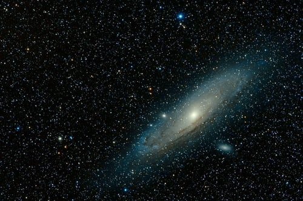

Between 1952 and 1954, in a series of articles in the popular magazine Collier’s, the German-American rocket pioneer Wernher von Braun presented his vision of a space station as a massive wheel-shaped structure that would rotate to generate “artificial gravity” from centrifugal force, sparing its crew of 1,000 scientists and engineers the drawbacks of weightlessness. It would be serviced by a fleet of winged spaceships employing nuclear engines.
The Soviet Union’s space station design took the form of a stepped cylinder 14.6 metres (48 feet) long, with its widest section 4.25 metres (13.9 feet) in diameter. Although the station could be oriented arbitrarily, its maneuvering engine was located immediately behind the wide section, which thus came to be defined as the rear of the station. At the front end was a docking system for Soyuz ferries. Internally, apart from an air lock in the cylindrical front section, the station formed a single rectangular room. .
The only element of NASA’s Apollo Applications Program that did not succumb to Nixon’s budgetary cuts was Skylab. Although similar in concept to Salyut in that its useful life was defined by its initial resources, Skylab was larger and much more capable because it used as its main habitat the upper stage of the Saturn V vehicle that had launched the Apollo spacecraft to the Moon. The station’s primary scientific instrument was the Apollo Telescope Mount, which at the time was by far the most powerful solar telescope ever placed in orbit. It also carried apparatus for Earth resources observations and materials science research.

On its launch in May 1973, Skylab’s thermal shielding was damaged, which made it necessary for the first crew to carry up and install an improvised “parasol” to allow the station to function at its planned level of operation. Over an eight-and-a-half-month period, Skylab hosted a trio of three-man crews for a total of nearly six months. Its final crew set an endurance record of almost three months; in the process, it undertook a detailed study of how the human body adapts to prolonged exposure to weightlessness—the Skylab program’s most significant legacy. Salyut 5, occupied by two crews in 1976 and 1977, was another reconnaissance platform.
SpaceX’s Dragon Endeavour spacecraft, with NASA astronauts Robert Behnken and Douglas Hurley aboard, will undock from the International Space Station on Aug. 1 and splash down on Aug. 2 off the coast of Florida. The Demo-2 mission is the first test flight with NASA astronauts for SpaceX and the final major test prior to certification of the system by NASA’s Commercial Crew Program for operational missions to the International Space Station. NASA astronaut Chris Cassidy and Russian space agency Roscosmos cosmonauts Anatoly Ivanishin and Ivan Vagner return to Earth aboard their Soyuz spacecraft, landing in Kazakhstan.

NASA selected Rubins as an astronaut in 2009, and she completed her first spaceflight in 2016 as an Expedition 48/49 crew member. She launched July 6, 2016, and spent 115 days in space, during which she conducted two spacewalks totaling 12 hours and 46 minutes before her return to Earth Oct. 29, 2016. During her stay on the space station, Rubins helped advance important science and research and became the first person to sequence DNA in space.